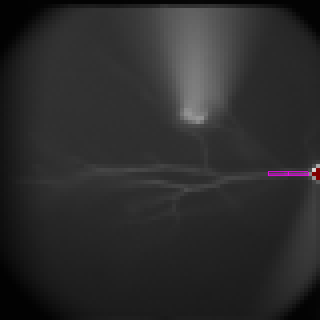

ROI ControlsThe figure on the right is the default settings of ROI Controls. In the imaging window, you can see a magenta box, which is called selection box and is used to create ROIs. The cross inside the selection box is for better visualization only. To hide ROIs and the selection box, uncheck "ROI". To show ROIs only, check "ROI Mode" and Ephic will hide the selection box, which is still effective but not visible. To move the selection box, click inside the selection box, hold and drag. To change the size and shape of the selection box, click ouside the selection box, hold and drag. |
||
|
To create the first ROI at the proximal trunk, click and drag along the proximal trunk. Click "+ ROI" button. Move the selection box to the side and you will see the first ROI displayed as a red box. The imaging data is also displayed in the imaging trace window. The color of the trace matches the color of the ROI box. This is a calcium imaging signal evoked by one bAP. The data displayed in the imaging trace window is the average of signals from all pixels in the ROI. |
 |
|
|
One ROI can contain several boxes. Ephic calls them Boxes Of Interest (BOIs). To add another BOI to the current ROI, click and drag along the trunk. Click "+ BOI". Move the selection box to the side and you will see the newly added BOI. You can add many BOIs to one ROI. |
||
| To create another ROI, click and drag along the trunk. Click "+ ROI". Move the selection box to the side and you will see the newly added ROI. The newest ROI is in red. The second new ROI is in orange. You will find two traces in the imaging trace window. The colors of these traces correspond to the colors of the ROIs. | ||
|
To move an ROI, check "ROI Mode". Click inside the ROI and drag. When you click
an ROI, it will become the active one, which becomes red. Ephic keeps index of each ROI and BOI. When an ROI is selected and becomes the active one, its index becomes the first and the indexes of all ROIs previously have lower indexes than the original index of the activated ROI will increase by one. It is also true for BOIs in one ROI. You can move one BOI by click inside the BOI and drag. You can delete the active ROI by clicking "- ROI". You can delete the active BOI by clicking "- BOI". In the ROI Mode, you can change the size and the shape of ROI or BOI by clicking outside the ROI or BOI and drag. To move all ROIs by one pixel, click the respective arrow heads. To save ROIs to an ROI file, click "Save ROIs" and follow the instructions. To load reviously saved ROIs from an ROI file, click "Load ROIs" and follow the instructions. To delete all ROIs, click "Clear ROIs". To display ROI information in a command window, click "ROI Information". |
||
Automatic Dendrite Tracing
Ephic can trace the dendrite for you. In this
experiment configuration, the length of 7
pixels is 25 µm. To trace the dendrite for 150 µm, type in 6 in the the
box next to the "Auto Tracer" button and press "Enter". Press and hold "Shift".
Click the base of the trunk and drag toward the direction of the dendrite. Two
seed pixels is good. Click "Auto Tracer" and you will see the tracer along the
dendrite. The tracer is in dark red. |
|
|
RulerTo display a blue ruler, check "Ruler" box. To change the location and the direction of the ruler, press and hold "Ctrl". Click and drag. One square is a 25 x 25 µm box. |